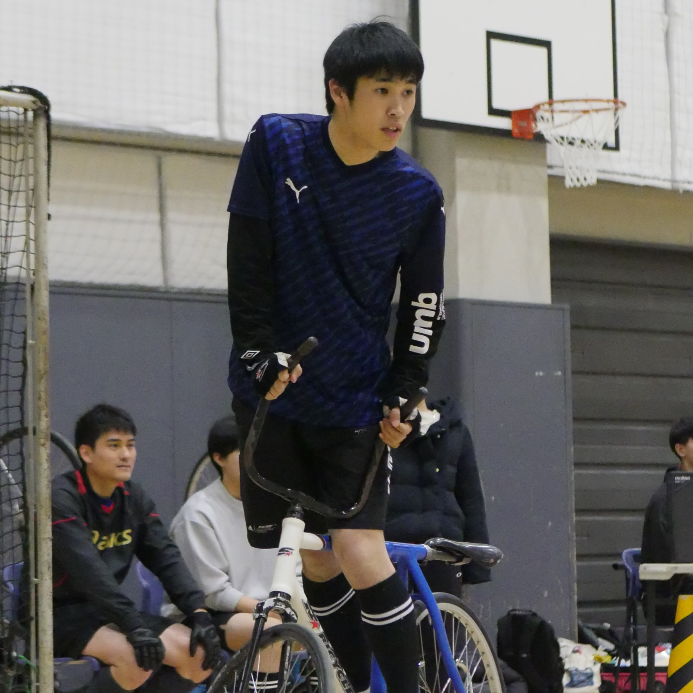
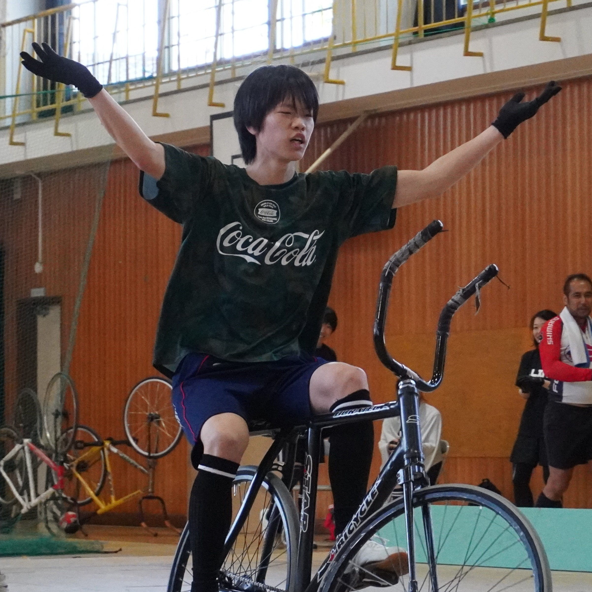
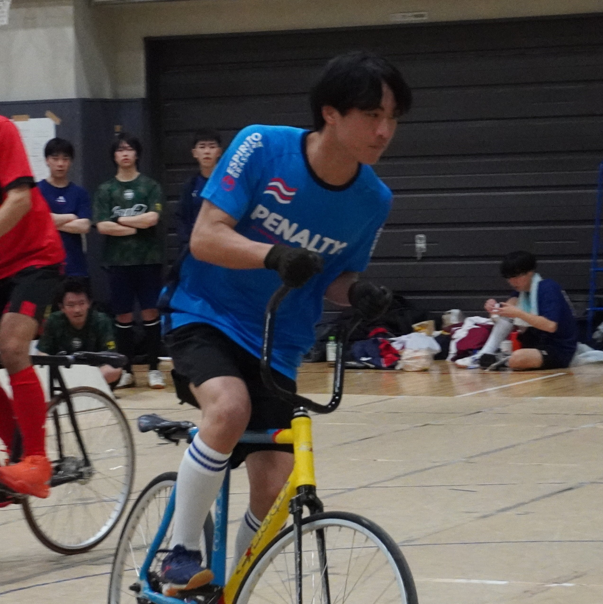

部員紹介
学年・経験問わず、個性豊かなメンバーが活動しています。
56期（学士4年）

牧野 碧
フォワード / 左
システム制御系
渡邊 壱颯
キーパー / 右
融合理工系
濱田 陽大
キーパー / 右
機械系
57期（学士3年）

福田 准市
フォワード / 右
PK決めます

山本 侑
キーパー / 左
PK止めます

湯上 海
キーパー / 両
いつもすりばちします

森山 嶺
フォワード / 右
公式戦では落ちません
58期（学士2年）

牧野 颯士
フォワード / 右
努力量は人一倍

柳井 Tiger
キーパー / 左
猪突猛進
59期（学士1年）

杉村 日比輝
フォワード / 右
先輩後輩関係ないです

荒川 遼介
キーパー / 左
地元新潟です
渡辺 壮真
フォワード / 左
工学院
小林 颯
フォワード / 左
情報理工学院
早稲田大学
牧 紘平
フォワード / 右
趣味：映画鑑賞
元木 悠士朗
キーパー / 左
好きな国：インド
部員の声
Q. 入部した理由は？
大学から新しい競技を始めたかったのと、 自転車に乗るのが好きだったからです。
（57期）Q. 実際に入ってみてどう？
初心者でも丁寧に教えてもらえて、 練習も楽しく続けられています。
（58期）Q. 新入生へ一言！
少しでも興味があったら、 ぜひ一度見学に来てみてください！
（59期）